Transducers
powerful abstraction
Transducers ùçè
clojure.org compose transformations
without awareness of input
nor creation of intermediate aggregates
* You may use it often without noticing it
Functional programing ♨
Higher-order function
takes one or more functions as arguments or returns a function
const add = a => (b => a + b); // returns a function
[1, 2, 3]
.map(add(1))
.filter(a => a % 2) // odd predicate (returns boolean)
;
[1, 2, 3]
.reduce((acc, a) => acc + a, 0) // sum reducer (returns accumulator)
;
Chain: readable but not optimal üò™
import { add } from 'slides';
const double = item => item * 2;
const result = [1, 2, 3]
.map(add(1)) // [2, 3, 4]
.map(double) // [4, 6, 8]
.map(add(-1)) // [3, 5, 7]
;
❌ Loop 3×, allocating new array each time
Fusion üòÉ
import { add, double } from 'slides';
const minus1 = add(-1);
const add1 = add(1);
const compute = item => minus1(double(add1(item)));
const result = [1, 2, 3]
.map(compute)
;
✔ Loop once, allocating only one new array
Using composition üòÅ
import { pipe, minus1, double, add1 } from 'slides';
// const compute = item => minus1(double(add1(item)));
// const compute = compose(minus1, double, add1);
const compute = pipe(add1, double, minus1);
const result = [1, 2, 3]
.map(compute)
;
✔ Readable, concise & efficient
Mixed operations ? üòµ
import { add1, odd } from 'slides';
const gt2 = a => a > 2;
const result = [1, 2, 3]
.map(add1) // [2, 3, 4]
.filter(gt2) // [3, 4]
.filter(odd) // [3]
;
❌ Loop 3×, allocates 3 new array
Combine predicates üòÜ
import { gt2, odd } from 'slides';
// logic: every = AND, some = OR
const pass = (logic, predicates) =>
a => predicates[logic](predicate => predicate(a))
;
const filter = pass('every', [gt2, odd]);
✔ Useful with all predicate operations: filter, find...
Still no mixed operation üòµ
import { add1, odd, gt2 } from 'slides';
const result = [1, 2, 3]
.map(add1)
.filter(odd)
.find(gt2)
;
❌ Loop 3×, allocates 3 new array 
Be optimal ü§©


Reduce all the things üòé
import { append } from 'slides';
const map = mapper =>
(list, value) => append(list, mapper(value))
;
const filter = predicate =>
(list, value) => predicate(value) ? append(list, value) : list
;
const find = predicate =>
(_, value) => predicate(value) ? { value, stop: true } : null
;
üíï Implement every operation as a reducer
Make it composable ü§™
let _map, _filter, _find; // _map(_filter(_find())) returns a reducer
const map = mapper =>
_map = next => (acc, value) => next(acc, mapper(value))
;
const filter = predicate =>
_filter = next => (acc, value) => predicate(value) ? next(acc, value) : acc
;
const find = predicate =>
_find = () => (_, value) => predicate(value) ? { value, stop: true } : null
;
ü§ü Tansformation as factories of reducers are composable!
Compose reducers üò≤
import { pipe, map, add1, filter, odd, find, gt2, noop } from 'slides';
const transform = pipe(
map(add1),
filter(odd),
find(gt2),
);
const result = [1, 2, 3].reduce(transform(noop));
✔ Rx pipe pattern ;) transform + reduce = transduce
Reduce to anything ü§†
import { pipe, map, add1, filter, odd, append } from 'slides';
const transform = pipe(
map(add1),
filter(odd),
);
const result = [1, 2, 3].reduce(transform(append), []);
✔ Accumulator & 'append' function are linked (aggregate)
Reusable transduce ü§ë
import { reduce } from 'slides';
const transduce = (transform, aggregate, accumulator, list) =>
reduce(transform(aggregate), accumulator, list)
;
✔ Fine, but how does this abstract input list type ?
A generic reduce ü§ì
const reduce = (reducer, accumulator, iterator) => {
let step = iterator.next();
while (!step.done) {
accumulator = reducer(accumulator, step.value);
if (accumulator.stop) {
return accumulator.value;
}
step = iterator.next();
}
return accumulator.value;
}
✔ Iterator allows to abstract how to reduce any iterable
It blow your mind ü§Ø
Takeaway
Transduce
- is optimized (iterate once, only needed items)
- is generic (any types of sync / async collection)
- powers reactive & stream based operations
- I üñ§ reduce
Curious? Look @ libs RxJs, Ramda, lodash/fp & more...
P.S. Slides source github.com/adriengibrat/Transduce-md